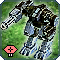
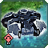
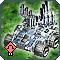

Patch 3709
Welcome to the patchnotes for the 3709 patch.
The aim of the patch is to allow more unit and upgrade options while also improving the factional balance. A brief explanation of each change is found below.
We wish you good luck and much fun playing with the new patch!
-- The Balance Team
Land
 Mongoose
The Mongoose became overpowered after the buffs given to it in the last patch and the buffs to mobile shields.
- MaxSpeed:
3.5→ 3.1 - MuzzleVelocity:
30→ 28 - Gatling Gun Damage:
16→ 15 - Hitbox:
0.4→ 1
 Asylum
- Shield HP:
3800→ 3500
 Parashield
- Shield HP:
3500→ 3000
 Wagner
Wagner
Amphibious tanks are getting their torpedo damage increased so that the weapon can have some relevance.
- Health:
1450→ 1200 - Underwater speed:
3.7→ 3
 Fire Beetle
Fire Beetle
Fire beetles get a cost reduction.
- Mass cost:
300→ 250 - Energy cost:
1800→ 1500 - Buildtime:
1200→ 1000
Air
 Air scouts
Air scouts
Air scouts get a hitbox increase to stop inties from missing them. Turn rate is also decreased.
- Hitbox:
1.6→ 2 - Turn rate:
0.8→ 0.6
 Spy planes
Spy planes
Spy planes get a turn rate decrease to allow them to be caught more easily.
- Turn rate:
0.8→ 0.6
 Swiftwind
Swiftwind
- Mass cost:
200→ 235 - Energy cost:
6000→ 6750 - Buildtime:
1600→ 1800
 Notha
Notha
After adjustments to turn speed in the previous patch, the notha sometimes failed to drop on repeat passes.
- Rate of fire:
0.1→ 0.2
 Wailer and Broadsword
Wailer and Broadsword
Cybran and UEF T3 gunships get a nerf to their mass and energy cost.
- Mass cost:
1260→ 1500 - Energy cost:
42000→ 65000
 Czar
Czar
The Czar is being reworked. It has been sarcastically known as the T4 mercy for the longest time but since some veterancy adjustments in the past it has becomed less useful even in this 'role.' The Czar now has a personal shieldand its AA also gets a large range boost.
- Speed:
8→ 10 - Shield Health:
0→ 30000 - Energy maintenance:
0→ 500 - Health
58000→ 40000 - AA missile AoE:
0→ 2 - AA missile range:
64→ 120 - AA missile muzzle velocity:
50→ 100
Navy
 Frigates
Frigates
Frigate sonar is being nerfed to allow T1 subs to stay hidden more easily.
- Sonar Range:
82→ 18
Structures
 Shou-esel
Shou-esel
The seraphim T2 sonar gets an upgrade to fully compensate for the lack of a T3 sonar. It can now move at slow pace and also has the option of submerging like the seraphim destroyer. It moves very slowly while submerged.
- Mass cost:
180→ 400 - Energy cost:
5400→ 6000 - Buildtime:
1171→ 600 - Speed:
0→ 1 - Speed while submerged:
0→ 0.5 - Health:
2000→ 1000 - Energy maintenance:
100→ 200
ACUs
 Seraphim ACU
Seraphim ACU
The Seraphim ACU upgrades are being adjusted. The regeneration aura upgrades are moved from the right arm to the left arm to allow it to be used in conjunction with the gun upgrade. RAS is moved from the back to the right arm.
 Regen Aura
Regen Aura
- T1 unit regen ceiling: → 10
- T2 unit regen ceiling: → 15
- T3 unit regen ceiling: → 25
- T4 unit regen ceiling: → 40
 Advanced Regen Aura
Advanced Regen Aura
- T1 unit regen ceiling: → 20
- T2 unit regen ceiling: → 50
- T3 unit regen ceiling: → 120
- T4 unit regen ceiling: → 240
Game Mechanics
 Veterancy
Veterancy
Veterancy is being adjusted to remove some exceptional rules that were introduced during patch 3688. Tech 2 and tech 3 units will also gain veterancy more quickly to reward good unit micro. Killing structures no longer gives reduced amounts of veterancy.
- The ACU now gains the full value of veterancy from higher tech units. In return, the ACU requires a greater amount of mass killed to gain the higher levels of veterancy.
- Level 2:
2000→ 2250 - Level 3:
3000→ 4000 - Level 4:
4000→ 6500 - Level 5:
5000→ 10000 - Tech 2 units veterancy multiplier(multiple of the unit's mass value required to level up once):
2→ 1.5 - Tech 3 units veterancy multiplier(multiple of the unit's mass value required to level up once):
2→ 1.25 - Veterancy gained from killing buildings:
0.5 times value→ Full value
 Target priorities
Target priorities
ACUs can no longer be prioritised by units except for experimentals. This mechanic has had a very detrimental effect on ACU usage, punishing slight mis-micro with an instant game loss.